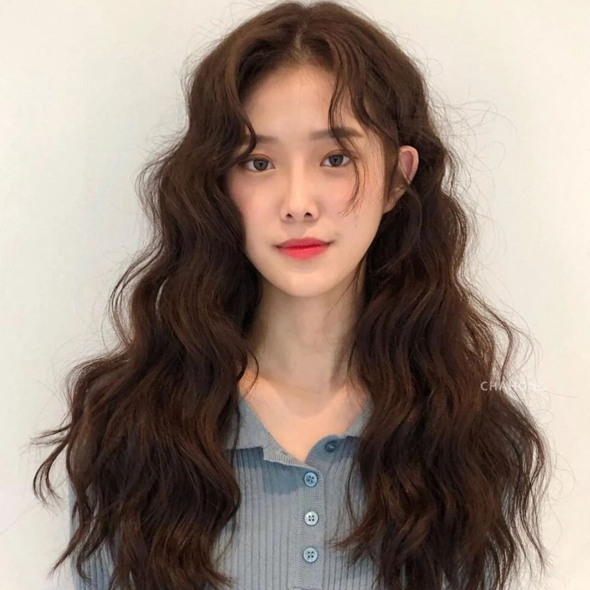
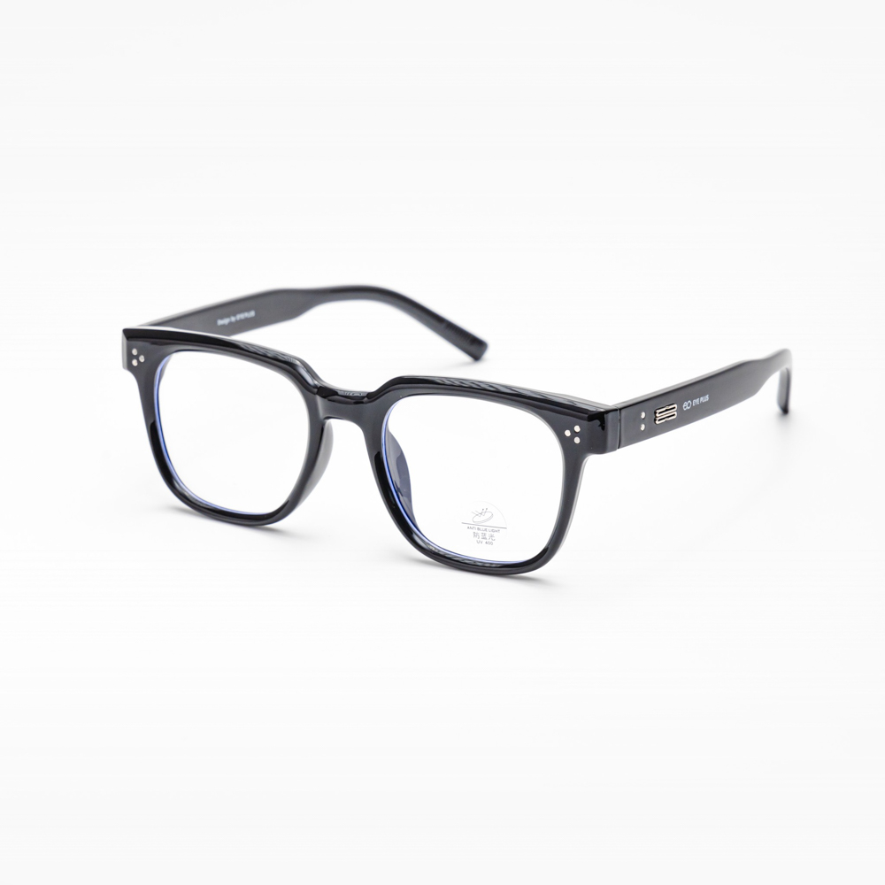
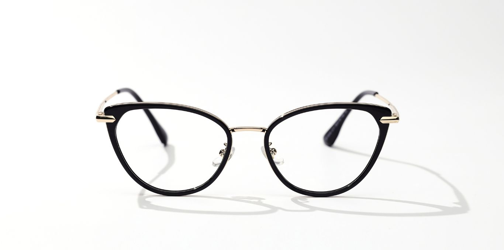

Những lọn sóng nước bung xõa mềm mại tựa dải lụa, buông lơi một cách tự nhiên tạo thành hai bức rèm đầy nghệ thuật. Chúng có chủ đích "cắt xén" bớt chiều rộng hai bên má, đánh lừa thị giác và kiến tạo một vẻ ngoài thon gọn đáng kinh ngạc, lãng mạn và vô cùng bay bổng.
Chi tiếtĐây là một bản giao hưởng của sự chuyển động và kết cấu. Các lớp tóc được tỉa xếp chồng lên nhau một cách có chủ đích, tạo nên những tầng layer nhảy múa, ôm nhẹ lấy gương mặt. Kỹ thuật này phá vỡ cấu trúc tròn trịa một cách hoàn hảo, kiến tạo những đường chéo và góc cạnh vô hình, mang lại chiều sâu và sự tinh xảo.
Chi tiếtMột nước cờ chiến lược đầy quyền năng trong nghệ thuật tạo kiểu. Sự bất đối xứng thông minh của đường rẽ ngôi 7/3 hoặc 6/4 ngay lập tức tạo ra một đường chéo "đánh lừa" thị giác, phá vỡ sự cân bằng tròn trịa cố hữu. Điều này khiến nửa trên khuôn mặt trông dài và góc cạnh hơn, một tuyên ngôn của sự hiện đại, tối giản nhưng vô cùng hiệu quả.
Chi tiếtMột tuyên ngôn kiến trúc táo bạo trên gương mặt bạn. Đây là sự đối chọi hình học xuất sắc và đầy quyền lực, nơi các góc cạnh sắc nét của gọng kính vuông trực tiếp đối kháng và cân bằng lại những đường cong mềm mại. Chúng kiến tạo lại toàn bộ cấu trúc, mang đến một vẻ ngoài sắc sảo, trí tuệ và đầy cá tính.
Chi tiếtMang trong mình DNA của một minh tinh Hollywood cổ điển, thiết kế với phần đuôi kính xếch cao đầy kiêu hãnh tạo ra một hiệu ứng "nâng cơ" thị giác. Nó hướng sự chú ý lên trên và ra ngoài, không chỉ giúp gương mặt thon gọn mà còn truyền tải một khí chất sang chảnh, quyến rũ và cực kỳ thời thượng.
Chi tiết"Khuôn trăng đầy đặn nét ngài nở nang" - vẻ đẹp của bạn mang một nét duyên ngầm phúc hậu, một "baby-face" khiến bao người ao ước. Thử thách duy nhất và cũng là cơ hội để thể hiện gu thẩm mỹ tinh tế, nằm ở việc kiểm soát tỷ lệ để không vô tình làm nổi bật phần má và góc hàm. Hãy khắc cốt ghi tâm quy tắc vàng: tuyệt đối tránh xa những kiểu tóc bob ngắn ngang cằm, mái bằng dày cộp hay các kiểu tóc uốn xoăn xù bông từ chân tóc ở hai bên thái dương. Chúng sẽ tạo thành một "khung tròn" hoàn hảo bao quanh, vô tình trở thành một vòng tròn nhấn mạnh, tố cáo và thậm chí còn khuếch đại những đặc điểm mà bạn muốn cân bằng lại.

Triết lý cốt lõi của việc tạo kiểu cho khuôn mặt tròn nằm ở nghệ thuật "đánh lừa thị giác" một cách tinh vi. Bí mật nằm ở việc tạo ra những đường thẳng và chiều dọc ảo để tái cấu trúc tỷ lệ. Chúng ta cần những kỹ thuật tạo kiểu thông minh để che giấu một phần hai bên mặt, đồng thời tăng thêm chiều cao ảo cho đỉnh đầu, từ đó kéo dài trục dọc và thu hẹp trục ngang của gương mặt một cách khéo léo.
Đây chính là "chân ái" bất diệt, là lựa chọn an toàn nhưng không bao giờ nhàm chán của các cô nàng mặt tròn. Những lọn tóc buông dài qua vai, được dập uốn gợn sóng lơi tựa như dòng suối mềm mại, tạo thành hai bức rèm hoàn hảo che đi phần má bầu bĩnh và xương hàm tròn. Hãy đảm bảo phần tóc trên đỉnh đầu được giữ thẳng mượt và các lọn sóng chỉ bắt đầu từ ngang tai trở xuống; điều này sẽ tạo ra trục dọc quý giá trước khi các lọn sóng bắt đầu nhiệm vụ "gọt mặt". Sự chuyển động của các lọn sóng không chỉ thu hút ánh nhìn mà còn tạo ra hiệu ứng đổ bóng tinh tế, giúp "điêu khắc" lại đường viền hàm, mang đến vẻ thanh thoát và nữ tính tuyệt đối. Một chút dầu dưỡng bóng sẽ khiến mái tóc thêm óng ả và đầy sức sống.
Bất kỳ sự phá vỡ cấu trúc đối xứng nào cũng là một nước cờ khôn ngoan và đầy quyền lực. Việc rẽ ngôi lệch 7/3 hoặc 6/4 tạo ra một đường chéo ma thuật, "cắt" ngang qua vầng trán tròn, ngay lập tức tạo cảm giác khuôn mặt dài và hẹp hơn một cách đáng kể. Khi kết hợp với độ dài ngang vai (lob - long bob) - tỷ lệ vàng cho mặt tròn - và phần đuôi được uốn cụp hình chữ C tinh tế, kiểu tóc này sẽ ôm trọn và giấu nhẹm đi phần xương hàm tròn trịa. Đây chính là bí quyết giúp các ngôi sao hàng đầu luôn xuất hiện với một góc nghiêng thần thánh, toát lên vẻ sang trọng, trưởng thành và đầy khí chất.
Hãy quên đi kiểu tóc buộc đuôi ngựa hay búi thấp ép sát da đầu vì chúng sẽ phô bày toàn bộ đường nét tròn trịa. Nghệ thuật ở đây là tạo khối và "đánh lừa" thị giác một cách ngoạn mục. Một búi tóc củ tỏi được thực hiện lỏng tay trên đỉnh đầu, kết hợp với việc đánh rối nhẹ để tạo độ phồng cho phần chân tóc, sẽ ngay lập tức cộng thêm vài centimet chiều cao cho tổng thể gương mặt. Điểm nhấn đắt giá chính là vài lọn tóc mái bay mềm mại được thả rơi tự nhiên ở hai bên mai. Chúng không chỉ tạo nét lãng mạn, thơ ngây mà còn là công cụ chiến lược để "gọt" bớt phần thái dương, giúp khuôn mặt trông thon gọn và cân đối đến không ngờ.
Trong nghệ thuật thị giác và thiết kế, quy luật tương phản là chìa khóa để tạo nên sự hài hòa và ấn tượng. Khi khuôn mặt bạn được tạo nên từ những đường cong mềm mại, thì phụ kiện đi kèm phải là "liều thuốc giải" mang hình khối học sắc bén, những đường thẳng dứt khoát. Gọng kính, vì thế, không chỉ là một vật dụng hỗ trợ thị lực, mà còn là một vũ khí, một công cụ kiến tạo mạnh mẽ giúp bạn định hình phong cách và cân bằng hoàn hảo tỷ lệ gương mặt.

Hãy xem chiếc kính này như một tác phẩm kiến trúc dành riêng cho gương mặt bạn, một khung cửa sổ định hình lại góc nhìn của người đối diện. Một gọng kính vuông vắn hoặc hình chữ nhật với đường viền rõ nét, đặc biệt là các gam màu tối như đen, nâu đồi mồi, sẽ trở thành cứu cánh không thể tuyệt vời hơn. Các góc cạnh của nó tạo ra một sự đối lập trực diện, một sự "đối thoại" hình học với những đường nét tròn trịa, từ đó định hình lại cấu trúc, tạo ảo giác về một gò má cao hơn, một khuôn hàm góc cạnh và sắc nét hơn. Chiếc kính này không chỉ là phụ kiện, nó là một tuyên ngôn về chiều sâu, sự trí tuệ và một phong thái chuyên nghiệp, sắc sảo.

Kính mắt mèo mang trong mình DNA của một quý cô Paris thanh lịch và một ngôi sao Hollywood cổ điển. Đây là lựa chọn táo bạo dành cho những ai không ngại thể hiện cá tính. Thiết kế độc đáo với phần góc trên được vuốt cao và sắc sảo về phía thái dương tạo ra một "hiệu ứng nâng cơ" thị giác ngoạn mục. Nó điều hướng ánh nhìn của người đối diện theo một đường chéo đi lên, một vector thị giác "kéo" sự chú ý ra khỏi phần má và hàm, tạo cảm giác gương mặt thanh tú và sang trọng hơn hẳn. Đây là lựa chọn hoàn hảo để thêm một chút kịch tính, một chút quyền lực và nét quyến rũ khó cưỡng cho tổng thể diện mạo.
Hãy tránh xa bằng mọi giá: Kính gọng tròn kiểu John Lennon (sẽ cộng hưởng và nhấn mạnh thêm nét tròn trịa, tạo hiệu ứng "mặt trong mặt"), gọng kính quá nhỏ (sẽ bị "nuốt chửng" trên gương mặt, vô tình khiến tỷ lệ tổng thể trông lớn hơn), hoặc những kiểu kính có đường cong dưới ôm sát vào phần má bầu bĩnh (vì nó lặp lại và nhấn mạnh đường cong bạn muốn che đi).
- Vùng tối (Shading): Đây là bước điêu khắc quan trọng nhất, là linh hồn của toàn bộ lớp trang điểm! Sử dụng phấn tạo khối tối màu, tán đều theo kỹ thuật "số 3" kinh điển: bắt đầu từ hai bên thái dương, lượn cong mềm mại vào hõm má (hóp má lại để xác định điểm chính xác nhất ngay dưới xương gò má), và kết thúc bằng việc tán dọc theo xương quai hàm. Kỹ thuật này sẽ "gọt" bớt chiều rộng hai bên và tạo ra một cấu trúc xương hàm V-line ảo diệu. Hãy nhớ quy tắc vàng: luôn tán thật kỹ để các đường khối hòa quyện vào da một cách tự nhiên, tránh tạo vệt.
- Vùng sáng (Highlight): Nơi nào có bóng tối, nơi đó cần ánh sáng để cân bằng và tạo điểm nhấn. Hãy tập trung bắt sáng vào "tam giác ánh sáng" dưới mắt, dọc sống mũi để tạo cảm giác mũi cao hơn, điểm giữa cằm và một chút ở trung tâm trán để kéo dài trục dọc. Việc làm nổi bật khu vực trung tâm sẽ tạo ra một "vùng tâm điểm" rạng rỡ, thu hút mọi sự chú ý vào đó, khiến các đường viền xung quanh mờ đi và tạo cảm giác khuôn mặt có chiều sâu, 입체적 (lập thể) và 3D hơn.
- Chân mày góc cạnh - Mái vòm kiến trúc: Đừng bao giờ vẽ một đôi lông mày ngang hoặc cong tròn mềm mại, vì chúng sẽ chỉ lặp lại đường nét của khuôn mặt. Thay vào đó, hãy tạo một đỉnh mày rõ ràng, hơi xếch lên. Cung mày có góc cạnh này sẽ đóng vai trò như một đường thẳng "bẻ gãy" sự tròn trịa của nửa trên khuôn mặt, một "mái vòm kiến trúc" tinh xảo giúp phá vỡ sự tròn trịa của tổng thể, tăng thêm vẻ sắc sảo, cá tính và quyền lực cho ánh nhìn của bạn.